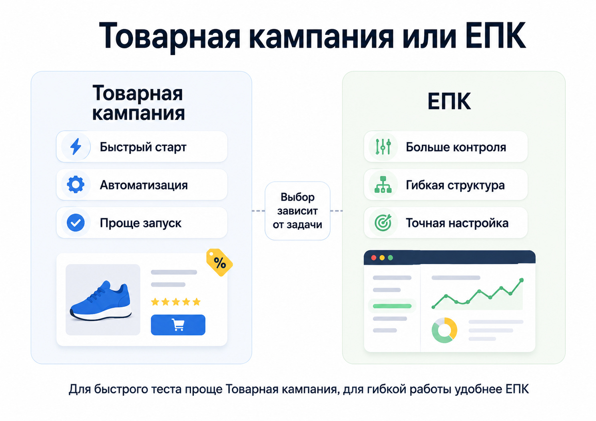

Блог о платном трафике
Настройка Директа для интернет-магазина
Настройка Директа для интернет-магазина начинается не с подбора тысяч ключевых фраз. Сначала нужно подготовить аналитику, передать в рекламную систему корректные данные о товарах, определить экономику рекламы и только после этого собирать кампании.
Для e-commerce особенно важны три вещи: Яндекс Метрика с данными о покупках, актуальный товарный фид и структура кампаний, позволяющая алгоритмам понимать, какие товары действительно стоит продвигать.
В 2026 году для интернет-магазинов в Яндекс Директе есть два основных инструмента: Товарная кампания для относительно быстрого автоматизированного запуска и Единая перфоманс-кампания, или ЕПК, для более гибкого управления рекламой. В ЕПК можно отдельно настраивать места показа, группы, таргетинги, товарные и комбинаторные объявления.
Что нужно сделать до запуска рекламы
Главная ошибка при настройке рекламы интернет-магазина - пытаться компенсировать рекламным кабинетом проблемы самого магазина.
До запуска я проверяю:
- корректно ли работают карточки товаров;
- удобно ли оформить заказ с телефона;
- совпадают ли цены и наличие на сайте с фактическими;
- есть ли нормальные фотографии и названия товаров;
- понятны ли доставка, оплата и возврат;
- нет ли товаров, которые бессмысленно рекламировать из-за низкой маржи;
- установлен ли счетчик Яндекс Метрики;
- передаются ли данные о покупках.
Если пользователь переходит из рекламы на товар, которого нет в наличии, видит другую цену или не может нормально оформить заказ, дальнейшая оптимизация Директа ситуацию не исправит.
Настройте Яндекс Метрику и электронную коммерцию
Для интернет-магазина недостаточно считать обычные посещения сайта или клики по кнопке.
Я рекомендую передавать в Метрику данные электронной коммерции. Ecommerce позволяет видеть просмотры товаров, добавления в корзину, покупки, состав заказов и выручку. Эти данные можно использовать и при оптимизации кампаний в Директе.
Минимально нужно проверить:
- Счетчик Метрики установлен на всех нужных страницах.
- Электронная коммерция включена.
- Событие покупки действительно передается.
- В заказ передается корректная сумма выручки.
- Директ имеет доступ к нужному счетчику.
После тестового заказа я отдельно проверяю, появилась ли покупка в Метрике. Сам факт наличия счетчика еще не означает, что ecommerce настроен правильно.
Почему лучше оптимизироваться по покупке
Для магазина конечный результат рекламы - заказ, а не просмотр карточки и не добавление товара в корзину.
Для e-commerce логично использовать финальные цели, например «Ecommerce: покупка». Добавление в корзину тоже может использоваться как сигнал, но оно не равно продаже.
Чем точнее рекламная система получает информацию о реальных продажах, тем меньше приходится принимать решения только по промежуточным действиям пользователя.
Подготовьте товарный фид
Фид - это файл с данными об ассортименте магазина. В нем передаются товары, категории, цены, изображения, ссылки и другие параметры.
На основе фида Директ может автоматически формировать товарные объявления и использовать их на Поиске, в РСЯ и Товарной галерее. Для интернет-магазинов обычно используется YML-фид.
что такое товарный фид и как он работает
Фид особенно нужен магазину с большим или регулярно меняющимся ассортиментом. Если передавать его по ссылке, Директ сможет периодически загружать обновленные данные.
Я проверяю в фиде как минимум:
- уникальные ID товаров;
- названия;
- категории;
- цены;
- наличие;
- ссылки на карточки;
- изображения.
У одного товара должен сохраняться один и тот же идентификатор.
Если магазин постоянно меняет ассортимент, передавать фид файлом вручную неудобно. Лучше сформировать автоматически обновляемый YML и передавать его по URL.

Какую кампанию выбрать для интернет-магазина
Я бы не сводил настройку Директа к одной кампании на весь магазин.
Обычно выбор идет между двумя основными вариантами.
Товарная кампания
Это более простой вариант. Директ может получить ассортимент непосредственно с сайта, из фида или из товаров, добавленных вручную.
Товарная кампания рассчитана именно на продвижение ассортимента интернет-магазина. Она автоматически формирует объявления для товаров и каталогов и может показывать их в Поиске и РСЯ.
Для относительно простого магазина такой вариант позволяет быстрее начать тест.
Единая перфоманс-кампания
ЕПК подходит, когда нужно больше контроля.
В ней можно разделять кампании и группы, выбирать места показа, использовать разные таргетинги, товарные объявления и объявления для каталогов, настраивать фильтры по фиду и детальнее анализировать статистику.
Для профессионального ведения интернет-магазина ЕПК часто удобнее именно из-за возможности управлять структурой и сегментами товаров.
С июня-июля 2026 года Яндекс постепенно заменяет привычные текстово-графические объявления в ЕПК на комбинаторные. Для новых задач вместо старых ТГО используются комбинаторные объявления, в которых система сочетает разные заголовки, тексты, изображения и видео.

Не рекламируйте весь ассортимент одинаково
Если в магазине 5 000 товаров, это еще не означает, что каждому из них нужно дать одинаковый рекламный приоритет.
У товаров разная:
- маржинальность;
- цена;
- популярность;
- конверсия;
- сезонность;
- доступность;
- остатки.
Поэтому после загрузки фида я смотрю, имеет ли смысл разделить ассортимент.
Например:
- основные категории;
- самые продаваемые товары;
- товары с высокой маржой;
- отдельные бренды;
- сезонные позиции;
- распродажа;
- остальной ассортимент.
В товарных объявлениях ЕПК можно использовать фильтры и определять, какие предложения из фида попадут в конкретную группу. Это позволяет строить структуру вокруг бизнеса, а не вокруг случайного списка товаров.
Слишком мелко дробить кампании тоже не стоит. Если каждая группа получает мало данных, алгоритмам сложнее оптимизироваться. Я разделяю ассортимент там, где это помогает по-разному управлять рекламой, бюджетом или оценкой результата.
Настройте показы на горячий спрос
Товарные объявления хорошо закрывают большое количество конкретных запросов по товарам.
Но у интернет-магазина обычно есть и более общие коммерческие запросы:
- название категории;
- категория + купить;
- бренд + категория;
- конкретная модель;
- запросы по назначению товара.
Для таких сегментов можно дополнительно использовать ЕПК и комбинаторные объявления.
В 2026 году ЕПК позволяет отдельно управлять Поиском, Рекламной сетью и другими местами показа, поэтому нет необходимости смешивать весь трафик в одну непрозрачную кампанию.
Я обычно смотрю не на количество собранных ключей, а на то, какие типы спроса нужно закрыть и какие посадочные страницы им соответствуют.
Запрос категории должен вести в подходящий каталог, а конкретный товарный запрос - на карточку товара. Отправлять весь рекламный трафик на главную страницу магазина обычно нет смысла.
Используйте Товарную галерею
Для интернет-магазинов отдельное значение имеет Товарная галерея в результатах поиска Яндекса.
Там пользователь сразу видит товар, изображение, цену и переходит на соответствующую страницу магазина. Товарные объявления для таких показов можно создавать через Товарную кампанию или ЕПК.
Качество исходных данных здесь напрямую влияет на внешний вид рекламы. Лучше использовать качественные изображения товара без текста, водяных знаков и лишних визуальных эффектов. Ссылка должна вести именно на рекламируемый товар.
Поэтому работа с товарной рекламой начинается еще внутри CMS магазина: с нормальных названий, фотографий, цен и структуры каталога.
Настройте возврат пользователей
Покупка в интернет-магазине не всегда происходит за один визит. Пользователь может посмотреть несколько товаров, сравнить варианты и уйти.
В Товарной кампании используется офферный ретаргетинг: человек, который уже смотрел товары или каталог, впоследствии может увидеть объявления с этими или релевантными предложениями.
Дополнительно в ЕПК можно использовать сегменты Метрики и сценарии аудиторий.
Например, отдельно работать с пользователями, которые:
- смотрели товары;
- добавляли товар в корзину;
- начали оформление заказа;
- уже покупали;
- давно не совершали повторную покупку.
Выбирайте бюджет исходя из экономики магазина
Универсального рекламного бюджета для интернет-магазина нет.
Один магазин может зарабатывать на заказе несколько сотен рублей, другой - десятки тысяч. Поэтому фраза «нормальная цена покупки в Директе» без данных о бизнесе ничего не означает.
Перед запуском я определяю:
- средний чек;
- валовую маржу;
- повторные продажи;
- допустимую стоимость привлечения заказа;
- допустимую долю рекламных расходов.
Если интернет-магазин передает в Метрику выручку, оценивать кампании можно уже не только по количеству покупок, но и по полученному доходу.
Это особенно полезно для ассортимента с сильно разной стоимостью товаров. Десять дешевых заказов и десять дорогих заказов - одинаковое количество конверсий, но совершенно разный результат для бизнеса.
Что показывает практика на реальных интернет-магазинах
В e-commerce итог определяется всей связкой: ассортиментом, сайтом, аналитикой, рекламными кампаниями и дальнейшей оптимизацией.
Например, в моем кейсе интернет-магазина «Мясницкий ряд» реклама принесла 69 покупок со стоимостью одной покупки 408 ₽ за период, отраженный в кейсе.
кейс рекламы интернет-магазина с 69 покупками
В другом проекте, интернет-магазине японской косметики, при рекламных расходах 64 тыс. ₽ выручка составила 656 тыс. ₽ за период кейса.
кейс Яндекс Директа для интернет-магазина косметики
Эти результаты не стоит воспринимать как ориентир стоимости покупки для любого магазина. У каждой ниши своя маржа, средний чек, конкуренция и конверсия сайта. Ценность кейсов в другом: рекламу интернет-магазина нужно оценивать по продажам и деньгам, а не по кликам и CTR.
Что проверять после запуска
Настройка кампаний - только начало работы.
После запуска я анализирую, куда действительно уходит бюджет и что приносит продажи.
Основные показатели:
- расходы;
- количество покупок;
- стоимость покупки;
- выручка;
- средний чек;
- конверсия сайта;
- доля рекламных расходов;
- результаты отдельных категорий и товаров.
Отдельно смотрю поисковые запросы, сегменты аудитории, площадки, устройства и типы объявлений.
Если товар постоянно получает клики, но не продается, нужно выяснить причину. Проблема может быть в рекламе, цене, карточке товара, наличии, доставке или самом спросе.
Поэтому я не принимаю решение об отключении только по одному показателю рекламного кабинета.
Частые ошибки при настройке Директа для интернет-магазина
Запуск без ecommerce
Директ получает конверсии, но рекламодатель не видит нормальную информацию о товарах и выручке.
Неактуальный фид
В рекламу попадают отсутствующие товары, неправильные цены или старые страницы.
Продвижение всего каталога без фильтров
Бюджет может уходить на позиции, которые плохо продаются или почти не приносят прибыли.
Оптимизация по слишком простой цели
Например, кампания работает на добавление в корзину, хотя магазин уже получает достаточно данных по реальным покупкам.
Оценка рекламы только по CPA
Две кампании могут иметь одинаковую стоимость заказа, но сильно отличаться по среднему чеку и выручке.
Постоянная ручная перестройка кампаний
Алгоритмические стратегии требуют данных. Если регулярно менять цели, структуру и ограничения без причины, стабильной оптимизации добиться сложнее.
Игнорирование сайта
Иногда дешевле увеличить конверсию карточки товара или упростить оформление заказа, чем пытаться получить еще более дешевый клик.
Пошаговая схема настройки
Если сократить весь процесс, настройка Яндекс Директа для интернет-магазина выглядит так:
- Проверить сайт и карточки товаров.
- Определить экономику рекламы.
- Установить Яндекс Метрику.
- Настроить электронную коммерцию и передачу покупок.
- Подготовить автоматически обновляемый товарный фид.
- Проверить цены, наличие, изображения и ссылки.
- Выбрать Товарную кампанию или ЕПК.
- Разделить ассортимент на действительно нужные сегменты.
- Настроить товарные и при необходимости комбинаторные объявления.
- Выбрать конечные цели и стратегию.
- Проверить работу рекламы после запуска.
- Оптимизировать кампании по покупкам и выручке.
FAQ
Можно ли запустить Директ для интернет-магазина без фида?
Да. В Товарной кампании Директ может получить товары непосредственно с сайта, а для небольшого ассортимента товары можно добавить вручную. Для большого и часто обновляющегося каталога удобнее использовать автоматически обновляемый фид.
Нужны ли ключевые слова для рекламы интернет-магазина?
Не для всех форматов. Товарные объявления могут формироваться автоматически на основе сайта или фида. Ключевые запросы и другие таргетинги остаются полезными в тех кампаниях, где нужно отдельно работать с конкретными сегментами спроса.
Что лучше: Товарная кампания или ЕПК?
Для быстрого запуска проще Товарная кампания. Если нужна более гибкая структура, раздельное управление местами показа, группами, таргетингами и товарами, удобнее ЕПК.
Нужно ли подключать электронную коммерцию?
Для полноценной аналитики интернет-магазина - да. Она позволяет передавать в Метрику данные о товарах, покупках и доходе и использовать эту информацию при работе с рекламой.
Вывод
Эффективная настройка Директа для интернет-магазина строится вокруг данных о реальных продажах. Сначала нужно подготовить Метрику и ecommerce, привести в порядок товарный фид и определить экономику рекламы. После этого можно выбирать структуру между Товарной кампанией и ЕПК, сегментировать ассортимент и запускать рекламу.
Чем лучше Директ понимает, какие товары покупают и сколько денег они приносят, тем осмысленнее можно управлять рекламой и масштабировать продажи.